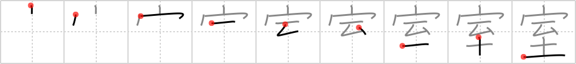

室
← →
room

Reading:
On-Yomi: シツ — Kun-Yomi: むろ
Heisig story:
House . . . climax.
Koohii stories:
1) [Katsuo] 2-11-2007(236): You book a room in a love hotel called "Climax House".
2) [eieneverafter] 25-3-2008(150): A simple room is made up of a roof, some walls, and a dirt floor.
3) [fuaburisu] 10-10-2005(40): This is the room of a “climax house”, that is, a Japanese love hotel.
4) [aircawn] 28-5-2007(27): "Jesus, get a room you two." So the couple went back to their house and climaxed there instead.
5) [Danieru] 11-6-2008(18): Under my roof, I've climaxed in every ROOM. I also enjoy doing it in different kinds of rooms: the bedroom ( 寝室 ), Japanese-style rooms ( 和室 ), even once in a changing room ( 更衣室 ).